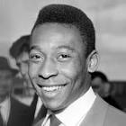

|  | Pelé |
| Gender | Male |
| Ethnic | Brazilian |
| Job | Brazilian Footballer |
| Desc | Breaking onto the scene as a sprightly teenager during the 1958 World Cup, Pele’s status as one of the finest talents the world has ever seen - and is ever likely to see - was firmly cemented when he scored a stunning solo goal in the final against Sweden. He won three World Cups and, on an individual level, scored more goals than anyone else has ever managed in the history of the game. No further explanation needed |
Affiliation
| Org | Brazil National Team |
| Club as Player | New York Cosmos |
| Santos FC |
Relationship
| Son | Edinho |
2013 02 25 Retrieve
[Pele on Bobby Moore] He was my friend as well as the greatest defender I ever played against.
2013 08 03 Retrieve
[Pele on Messi vs Neymar] People like to compare Neymar with Messi, but Messi already has years of experience. So does Cristiano Ronaldo, who’s a forward who scores more goals. But, in the future, I think Neymar will be even better
2013 11 23 Retrieve
[Pele on Zidane] Individually I think Zidane was better than Messi. Zidane was amazing and the team-mates he played with were not up to the standard of Messi’s - he plays with Xavi and Iniesta at Barcelona
2014 05 04 Retrieve
[Pele on who has been the greatest player since he retired] The most complete was Zidane. We had Cruyff, Zico was excellent, Socrates. Over the last ten years, even though we’ve had Messi and Cristiano Ronaldo, the most complete was Zidane
2014 11 12 Retrieve
[Pele to Maradona on 2005 tv show] You are an example because you are a conqueror
2015 03 28 Retrieve
[Pele on Neymar] I think him becoming the new king, the new Pele, is impossible. My mother and father have shut down the factory
2015 04 11 Retrieve
[Pele on Messi] When he’s with Barcelona, with a team he already knows and knows well, he’s a player. But Messi, when he’s with the Argentinian team, is not the same thing
2016 04 16 Retrieve
[Pele on Steven Gerrard] Gerrard is an excellent player, absolutely world-class. If I was a manager, everywhere I went I would buy Steven Gerrard. He is what Brazil needs, because he is always looking forward and has a big heart. Two years ago I saw Gerrard play and then I saw him in Tokyo in a game against Sao Paulo. I said then that Gerrard is a great player. To me he is one of the best midfielders in the world. He is an excellent player
2016 04 16b Retrieve
[Pele joking about re-lacing his boots to bring home gold for Brazil at this summer’s Men’s Olympic Football Tournament] The only title Brazil doesn’t have is the Olympic tournament champion. The only tournament I never played in, because I was professional, was the Olympics. Now, we’re going to have the Olympics in Brazil. I think I’m going to prepare to play this Olympics. Maybe I’ll win this championship for Brazil. In five months, I have to be prepared for that!
2016 04 23 Retrieve
[Pele revealed he was close to joining Spanish giants Real Madrid and Italian side Napoli during his playing career] There were many times when I was very close to signing with Real Madrid, and then once more with Napoli in Italy. It’s not a regret. I was at Santos, and at the time they were a powerhouse
2016 05 14 Retrieve
[Pele, in a letter to his younger self for The Players’ Tribune] At the end of the ‘58 final, you will pass out and fall to the ground. Even today, this is a moment that is difficult to explain. The emotion is simply too much for your body. When your team-mates wake up, you will cry. You always cry, Edson, even later in life. You are an emotional person who cries easily
2016 06 09 Retrieve
[Pele asked his fellow World Cup winner if he knows his compatriot personally, prompting Maradona to offer an unguarded response that he has no personality] Ah, I get it, he’s not like we were back in the days. In the 70s we [Brazil] had really good players like Rivellino, Gerson, Tostao. Not like Argentina now, which depends only on Messi. He [Maradona] is saying that Messi is a good player, there’s no doubt about it, but he has no personality
2016 10 29 Retrieve
[Pele leads the tributes for former Brazil captain and legend Carlos Alberto Parreira who tragically passed away this week] I have so many good memories of our time together as team-mates and champions at Santos FC, the Brazil national team and New York Cosmos. We had a winning partnership, and even after football we remained very close. I send my sincere condolences to his family and may his soul Rest in Peace. Dear God, please take care of our ‘Capitao’
2017 02 03 Retrieve
[Pele has claimed that Barcelona and Brazil superstar Neymar is technically way better than Real Madrid talisman Cristiano Ronaldo] The only problem that Neymar has is heading. Cristiano Ronaldo is not better than him. Technically, Neymar is way better, but [Ronaldo] is better when using the head. You don’t see Neymar scoring with the head, and that counts.
[Pele believes the Selecao are now playing as a unit rather than a team of skilled individuals] One of the things that gave me most satisfaction was to see Tite’s approach. Brazil always had good players - since the time of Leonidas, Brazil always had great players. But what was our problem? We didn’t have a team. I like his interview, he said: ‘Oh, let’s play these games only with Brazilian players who are here. If we need you, we will call you. But first we give the chance to those who are playing here [in Brazil]. Good players, new players’. I hope it works. Tite is on the right path
2017 09 04 Retrieve
[Pele says he was happy to see Cristiano Ronaldo overtake his mark for international goals last week] I saw the goal, It was really special. It was a really nice play.
Of course, these are different times. But the beautiful thing about football is the goals. And I take this opportunity to send a big greeting to Cristiano Ronaldo for that victory
[In reference to his total career goals record, the three-time World Cup winner] Now he has to score more than 1,283 goals!
2017 09 05 Retrieve
[Pele says he and Diego Maradona are friends, despite a constant war of words over the years] I can’t explain why Maradona is so concerned with that. Because I always say that he was one of the best in the world, and that’s true. Now, we can’t say that Maradona was a great header. He didn’t score goals with headers. And we cannot say Maradona shot very well with both feet, because he didn’t shoot with his right, only mainly with his left … So from time to time, when people make comparisons, I make jokes about that. For me he was a great player, just that you can’t compare Maradona with Pele..
We are friends. We are always joking. I always say to him: ‘Maradona, you can be level with Pele when you have scored more than 1,000 goals’. And he says: ‘I can’t now, but it doesn’t matter!’
2017 09 08 Retrieve
[On Neymar] People always ask me about Neymar. Wherever I go, everyone wants to know about Neymar and I am very proud because my son, who was a goalkeeper at Santos, Edinho, was coach of the youngsters at Santos for two or three years and Neymar was there at that time. So I spoke to Neymar’s father a few times. I had some photos taken with them, we did a commercial in Brazil. And I feel very proud that Neymar came out of Santos, and that my son was his coach. I feel great pride. I hope he is lucky with his career and I hope he keeps playing his football.
I came from Santos, Neymar as well. When he was much younger, he was from Sao Vicente, close to Santos. And when he started out, my son told me, ‘There is a kid at Santos who is really good’. But I didn’t expect that. Years later, Neymar appeared. I hope he has the same good fortune that I had in my career. I hope he is fortunate because he is a great player and a great person as well
It’s a great responsibility he has now. Because people started comparing Neymar to Messi. And as a Brazilian, I say that there’s no doubt that Neymar is one of the best in his position, because we have Cristiano Ronaldo who is a centre-forward as well. But with Messi it’s a bit different. Messi is an organiser and he also scores goals.
Neymar is more of a striker. There is no doubt he has a great future ahead, but there are things he needs to improve on, in the next World Cups for example. Today, with different styles, Cristiano Ronaldo, Messi and Neymar are the best players in the world. There are other players, but the best in the world at the moment are those three
For Neymar, I think it [moving to PSG] was the best thing. For Brazil, not much changes. There are other good players. But for him, I think it was the best thing because there was always the discussion, ‘Neymar, Messi, Neymar, Messi’. Now, he will have the opportunity to be the big star. But for the Brazil national team, not much changes
They are different moments. Different eras. I was really happy at Santos, because Santos were winning almost all the titles at that time, we were world champions twice, and I never accepted leaving Santos. I had offers from Real Madrid, Manchester United, Benfica, Roma, from two or three Italian teams. But I was happy at Santos. I wasn’t going to move just for the sake of moving or for a little more money. But they were different times.
And I only accepted to leave Santos and go to Cosmos at the end of my career. But it was to promote football in the USA. At that time, Mr. [Henry] Kissinger was in Sao Paulo, he was in Brazil. He called me and said, ‘Listen, we want to do a big promotion and implement football in the USA and we have an offer for you to come and coach’. So I believe it was different to going to play in Italy, Spain or Germany. It was more an offer to coach, to teach the kids, and for that reason I went to New York Cosmos, but it was at the end of my career
I think in football there are always great surprises. Everyone talks about the World Cup and everyone criticised Brazil, Neymar got injured… in the last World Cup. And people forget that, of the five World Cups Brazil have, none of them were won in Brazil. They have won five and none of them were in Brazil.
First in 1950, and I have a great memory of that. I was around 10 years old and my father was a professional with Bauru Atletico Clube, and I saw my father crying, with the other players, and I said, ‘What has happened?’ And he said, ‘Brazil lost the World Cup’. They were listening on the radio at that time.
And later, Brazil won five World Cups, but the last one, which was in Brazil, was lost again. So it’s a difficult story to understand. Why does God do that? The two World Cups played in Brazil, and Brazil lost. So I think that now, the next World Cup is going to be in Russia and Tite, it looks like he is building a good team. They are confident and let’s hope they win. We are going to be there
It’s difficult. I have spoken several times about players I have known. When I saw [Johan] Cruyff, in a game we played with Santos, a friendly, I said Cruyff would be a great player, and he was. Eusebio, [Franz] Beckenbauer, when I saw him play, as well. So it’s difficult to say, but Neymar has a big chance to be among the great players at the next World Cup
2018 01 17 Retrieve
[Tite the man to lead Brazil to World Cup] Those who are Brazilian and believe in Brazil always point to Brazil as the favourites. Tite is managing to make them a team again. At the last World Cup, we had the best players in the world but the team was disorganised. It seems that now we’ll have a team and a Selecao that gives us confidence.
[The 77-year-old, who suffered health problems last year, went on to assure those in attendance that is recovery is going well] I’m fine, thank goodness, and I want to thank all those who sent me messages wishing me a good recovery from all over the world
2018 01 18 Retrieve
[Brazilian legend Pele has made his pick between Barcelona talisman Lionel Messi and Real Madrid superstar Cristiano Ronaldo] It’s sad that you have only two players in the world to choose from. Johan Cruyff, Diego Maradona, Pele, Zico, Junior … All over the world now there are only two players. And Neymar, right? Our Brazilian is getting there. I would still stay with Messi. Scoring is important, no doubt, but if you do not have anyone to prepare, then the ball is not enough. For my team I prefer Messi.
Messi’s been the most stable in the last 10 years. As for Cristiano Ronaldo, he’s a great goalscorer. Ronaldo’s been able to score goals, while you see Messi creating goals and directing the play, as well as scoring. Ronaldo’s a great goalscorer but in terms of the complete player, there’s no doubt that Messi is the best
2018 01 24 Retrieve
[Why ‘new Pele’ Robinho failed to become a superstar as he returns to Europe at 34] Robinho can surpass my own achievements. We have to thank God that another Pele has landed at Santos.
2018 02 24 Retrieve
[Neymar is technically the best player in the world] Neymar has changed the way he plays with the national team. He has had to. At his club side, he was playing as a left-sided attacker, whereas for Brazil, he plays more centrally, as a more traditional No. 10. He’s ready to lead this team, yes. He might find that the tactical switch from his club to the national team isn’t straightforward, but Neymar is Brazil’s key player. He has to prepare himself for that. And I would go further: for me, technically, he is already the best player in the world. I’m absolutely sure of that.
If you look around the world, the ones who stand out are Lionel Messi, Cristiano Ronaldo and Neymar. There are no other superstars
2018 04 07 Retrieve
[Neymar is more like Barcelona icon Lionel Messi than Real Madrid talisman Cristiano Ronaldo] Neymar has been compared with Cristiano Ronaldo. So I’ve said several times, told friends, in Europe, given interviews… Cristiano Ronaldo is an excellent player, he could be like our Vava, our Coutinho, the finisher. Neymar is really more of a Messi-style, one who constructs the play, but scores the goal also
2018 04 21 Retrieve
[Pele speaks on the 60th anniversary of his first World Cup trophy with Brazil] I played four World Cups. The first one always is a little special, because I didn’t expect it, because I was 17 years old. My father was a football player too and when my father came to my house after work, he said ‘listen, you have been selected for the national team of Brazil’. I said ‘Daddy, don’t make a joke’. He said ‘no, no, no, it’s not a joke, it’s true’. I started to cry, because it was a big surprise to me
2018 05 12 Retrieve
[Pele writes about the news that Dani Alves will miss out on the World Cup due to injury] I am so sad to hear this. Footballers hate missing games but I know first-hand that missing World Cup games is the worst feeling
2018 06 07 Retrieve
[Brazil great Pele believes the nation can win their sixth World Cup at Russia 2018] I’ve great confidence in the abilities of Tite. I’ve only got one concern: there are only a few days before the beginning of the World Cup and we still don’t have a good team. Individually, all the players are very good. But we are not a team.
[On Neymar] Today, he’s matured and has more experience, but he’s not going to win the World Cup alone. It’s teams who win the World Cup
2018 06 09 Retrieve
[Pele believes the South Americans need to play as a team to win at Russia 2018] Neymar is to me one of the best players in the world. Today, he is more mature and he has more experience, but he isn’t going to win the World Cup on his own. It’s teams that win the World Cup. The greatest Brazil team of all-time was the one in 1970, with Tostao, Rivellino, Gerson and Pele all wearing the number 10 shirts for their clubs. In the 1970 World Cup, we spent more than six months together. That’s why it worked
2018 07 15 Retrieve
[Pele has welcomed Kylian Mbappe to an exclusive club that now includes just the two of them] Only the second teenager to have scored a goal in a #WorldCupFinal ! Welcome to the club, @KMbappe - it’s great to have some company!
If Kylian keeps equalling my records like this I may have to dust my boots off again
2018 09 24 Retrieve
Congratulations to Luka Modric and Marta on winning the #TheBest [The Best FIFA Men/Women Player 2018] awards tonight. It’s been a privilege to see you both play this season
2018 12 06 Retrieve
[Lionel Messi only has one skill] How can you make a comparison between a guy who heads the ball well, shoots with the left, shoots with the right and another who only shoots with one leg, only has one skill and doesn’t head the ball well? How can you compare? To compare with Pele, it has to be someone who shoots well with the left, shoots well with the right, and scores headers.
As far as I’m concerned, Maradona was one of the best players ever. If you ask me, ‘Was he better than Messi?’ Yes, he was. Much better. [Franz] Beckenbauer, [Johan] Cruyff were also excellent players
2018 12 08 Retrieve
[Pele gives his opinion on some of the game’s great players] As far as I’m concerned, Diego Maradona was one of the best players ever. If you ask me, ‘Was he better than Messi?’ Yes, he was. Much better. Franz Beckenbauer, Johan Cruyff are also better. They’re also excellent players
2018 12 16 Retrieve
[Brazilian football legend Pele has warned Neymar that his on and off-field antics] I always said that Neymar will become a great player. But what has happened in recent years? He began to want to appear in another way, not by scoring goals but by making gestures, simulating fouls, complicating the referees’ lives. That’s why his image became negative. We have talked about it several times together, despite everything he remains one of the best players in the world. A father does not criticise, a father educates his son. When I say to you that he is our child, it’s because he is considered a child of Santos. People think that I ‘twist his ear’ too often but I do it for his own good, I wish the best for him, for Brazil, I will do everything to help him.
I already complimented Mbappé last year, saying he was a great player. He won the World Cup at 19, I was only 17 years old when I won it. I said to him that he could equal me, I think he can become the new Pele. A lot of people think I said that as a joke, but no, it’s not a joke! PSG are a great team, I hope they will play great football and they will go to the Champions League final. Then, only God knows if they’ll win it or not.
2018 12 17 Retrieve
[Pele opens new football school to support Brazilian children] In 1969, when I scored my 1,000th I spoke about the necessity to look to the future, to look to the children and ensure we provide them all they need to be able to dream that they could one day achieve what I have. I received all these tributes here today and I can’t believe that all these people, most of whom never even saw me play, can greet me with this much affection. I hope this project can help in the development of many, many children.
It is a great responsibility to have my name linked to a city like this. Resende opened its doors and I am very proud that I can present them with this Center of Football Excellence, mainly to prepare children to be great people. We all have to work together to create good citizens. This is the great importance of the project
I played 25 years with Santos and the Brazilian National Team, plus five more years with the Cosmos. And now God is sending me the bill
You must always play in order to improve and keep trying, as I always did. You must never think you’re the best, you must always think you have to improve. That is what I must pass on to the children who want to be great players, that you always have to work
I didn’t speak German but I learned a few English words and Beckenbauer used to joke with me. He already spoke English and one of the good things I learned from him was speaking English. So, I I speak English badly then it’s because of him
I think that when we talk about goals, the attackers are the ones we discuss the most. It’s a good thing for me, I had the opportunity to score a lot of goal, but I did not score any of them alone. If I did not have a good goalkeeper, a full-back to help me … No one plays alone, so I think that’s important to remember
2018 12 22 Retrieve
[Pele believes French star Kylian Mbappe can emulate his illustrious career] I already complimented (Kylian) Mbappe last year, saying he was a great player. He won the World Cup at 19, I was only 17 years old when I won it. I said to him that he could equal me, I think he can become the new Pele. A lot of people think I said that as a joke, but no, it’s not a joke!
2018 12 30 Retrieve
[On Lionel Messi] How can you make a comparison between a guy who heads the ball well, shoots with the left, shoots with the right and another who only shoots with one leg, only has one skill and doesn’t head the ball well? How can you compare? To compare with Pele, it has to be someone who shoots well with the left, shoots well with the right, and scores headers. As far as I’m concerned, Maradona was one of the best players ever. If you ask me, ‘Was he better than Messi?’ Yes, he was. Much better.
2019 01 19 Retrieve
[Pele speaks about Kylian Mbappe] He won the World Cup at 19, I was only 17. I teased him saying he had almost equalised. I think he can become the new Pele. Many people think I say that for a laugh, but no, it’s not a joke
2019 03 04 Retrieve
[Brazil legend Pele has backed Liverpool to win the Premier League] Happy birthday to Liverpool hero, Kenny Dalglish. I backed @LFC to win the Premier League from the start. I still think they will do it
2019 04 02 Retrieve
[Brazil legend Pele has advised Kylian Mbappe on how the French World Cup winner can become the best player in the world] He is not yet the king. He is undergoing tests to become the king. He still has a lot of steps ahead of him. He is young, he has just started. In football, you do not always know everything. There is always something to learn. He can always improve his game, his movements. If I can give him advice, it’s taking care of his body and looking after himself. The technique, he already has it. The physical aspect is the most important thing for an athlete today. What is missing? Not much. Maybe his heading game, the impulse and the jump. That’s what makes us different again because I had a lot of momentum. I was going very high and I scored a lot of headed goals.
No, he does not need to leave the PSG. He must continue to play the same way because he will become the best in the world. That’s important. If we have to make a comparison with Pele, Pele never left Santos to be the best player in the world
2019 04 06 Retrieve
[Pele talks about Kylian Mbappe] He is not yet the king. He is undergoing tests to become the king. He still has a lot of steps ahead of him. He is young, he has just started. In football, you do not always know everything. There is always something to learn. He can always improve his game, his movements. If I can give him advice, it’s taking care of his body and looking after himself. The technique, he already has it. The physical aspect is the most important thing for an athlete today
2019 04 21 Retrieve
[Brazilian great Pele recently stressed a club move isn’t necessary for Mbappe] He is not yet the king. He is undergoing tests to become the king. He still has a lot of steps ahead of him. He is young, he has just started. What is missing? Not much. Maybe his heading game, the impulse and the jump. That’s what makes us different again because I had a lot of momentum. I was going very high and I scored a lot of headed goals
2019 11 14 Retrieve
[Pele picks Messi as perfect playing partner and reveals his hope for Neymar renaissance] I think Leo Messi. He is a skilled player, gives assists, passes, scores, dribbles well. If we were in a team together, the opponents would have to worry about two players, not just one! Today Messi is the most complete player
Once you found two or three in every country with a great football culture. Eusebio, Antonio Simoes, Johan Cruyff, Franz Beckenbauer, Diego Maradona, Garrincha, Didi. How many did I say? There were so many. Today we have two or three in total. Messi, Cristiano Ronaldo, I would say Neymar, who in Brazil has not yet managed to become a great figure
[A three-time World Cup winner said when asked if Neymar can inspire a bid for football’s grandest prize] I hope so. I hope that at the next World Cup he is in good physical condition. People criticise him. Even I did it a few times, but we forget that he is a product of ours, of the nursery of Santos. We always want the best for him. I talk about it often with his father. Technically he is an excellent player
[Another product of the Santos academy to have rediscovered a spark of late is Gabriel Barbosa] Gabriel Barbosa made himself known with the Santos shirt, went to Europe, returned. He is a good player, I hope he has luck. But we cannot guarantee that he will break through into Europe
2019 12 02 Retrieve
[Pele in moving tribute to ‘magic’ Gordon Banks] For many people, their memory of Gordon Banks is defined by the save he made against me in 1970. I understand why. When you are a footballer, you know straight away how well you have hit the ball. I hit that header exactly as I had hoped. Exactly where I wanted it to go. And I was ready to celebrate
But then this man, Banks, appeared in my sight, like a kind of blue phantom, is how I described him. He came from nowhere and he did something I didn’t feel was possible. He pushed my header, somehow, up and over. And I couldn’t believe what I saw. Even now when I watch it l, I can’t believe it. I can’t believe how he moved so far, so fast
I scored so many goals in my life, but many people, when they meet me, always ask me about that save. While it was indeed phenomenal, my memory of Gordon is not defined by that - it is defined by his friendship. He was a kind and warm man who gave so much to people.
So, I am glad he saved my header - because that act was the start of a friendship between us that I will always treasure. Whenever we met, it was always like we had never been apart
I have great sadness in my heart and I send condolences to the family he was so proud of. Rest in peace, my friend. Yes, you were a goalkeeper with magic. But you were also so much more. You were a fine human being
2020 02 14 Retrieve
[Pele rejects claims that he is too depressed to leave his house] Thank you for your prayers and concerns. I’m fine. I’m turning 80 this year. I have my good and bad days. This is normal for people my age. I’m not afraid, I’m determined and I’m confident in what I do. Last week, I had the honour of meeting the CBF [Brazilian Football Confederation] president in the studio I was shooting my documentary in. I had two photo sessions last month for campaigns that use my image and testimony. I have several upcoming events scheduled. I do not avoid meeting commitments from my always busy schedule. I continue to accept my physical limitations in the best possible way, but I intend to keep the ball rolling. God bless you all
2020 03 19 Retrieve
[Pele denies claims depression left him housebound] This depression thing, I don’t know if I was misunderstood. I’ve had some injuries in the past few years. I was operated on, which hindered me from doing commercials or appearing in public. People got concerned, and I thank them very much for that. But then someone came up with this story that I was depressed. I arrived here [for the interview] with the help of a walker. I’m fine, but of course, I can’t ride a bike. Maybe when I was injured and had to do an interview, I mentioned I was sad about it. But thank God I’m making a good recovery, I’m fine. I had a swollen tendon that forced me to medicate. It hurt a little and made movement a little difficult. But thank God I’m conscious - and not talking nonsense
I never imagined I would be big [in football]. When Santos asked about taking me from BAC (Bauru AC, one of Pele’s youth clubs) to train at Santos, I thought it was a joke, I was 13, 14 and I wasn’t even making the first team there. But I went and got approved, I thought I was dreaming. I remember my father taking me to the Bauru bus station so I could go to train at Santos. It looked like something from another world, and now players are able to take private jets to go around. Life can be funny sometimes
2020 03 25 Retrieve
[Pele: Ronaldo the best player in the world ahead of Messi, but I’m the greatest of all-time] Right now I think Cristiano Ronaldo is the most consistent player out there, but you can’t forget about Messi
[When asked he if was better than Ronaldo and Messi] That’s a tough question to answer. I’ve been asked many times. We mustn’t forget Zico and Ronaldinho. People always talk about European players like [Franz] Beckenbauer and [Johan] Cruyff. It’s not my fault, but I think I was better than all of them. There will only be one Pele. There won’t be anyone else like me
2020 03 28 Retrieve
[Pele on who the best footballer] It’s a tough question to answer. They’ve asked me many times. Not [just] Messi. [We] can’t forget Zico, Ronaldinho Gaucho. People always talk about Europeans - [Franz] Beckenbauer, [Johan] Cruyff. It’s not my fault. I think Pele was better than all of them. Why? Because everybody keeps comparing the others to me